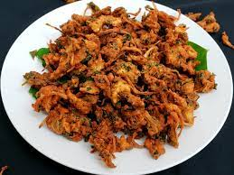

Pakodi

Description
Pakodi is a popular snack that is enjoyed all over India and is perfect for any occasion, whether it's a quick snack, an appetizer or even as a side dish.
Ingredients
- Gram flour (also known as besan)
- Salt
- Turmeric powder
- Red chili powder
- Cumin powder
- Baking soda
- Water
- Finely chopped onions
- Green chillies
- Coriander leaves
- Oil for deep frying
Steps
- In a mixing bowl, add gram flour, turmeric powder, cumin powder, coriander powder, red chili powder, baking soda, and salt. Mix well.
- Add water gradually and mix the batter well to get a smooth and thick consistency. The batter should not be too thin or too thick.
- Add the vegetables or other ingredients of your choice to the batter and mix well so that they are coated evenly with the batter.
- Heat oil in a deep frying pan over medium heat. Once the oil is hot, drop small portions of the batter-coated vegetables or other ingredients into the oil.
- Fry the pakodis in the hot oil until they are golden brown and crispy. Stir occasionally to ensure even frying.
- Once the pakodis are done, remove them from the oil using a slotted spoon and place them on a paper towel to absorb any excess oil.
- Serve the pakodis hot with your favorite chutney or ketchup.